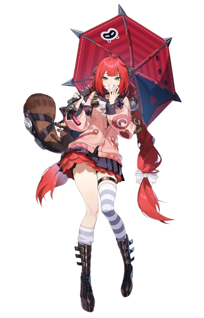
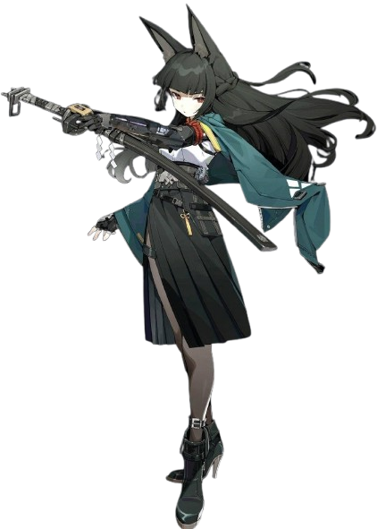

A nigh-blind sniper and frontline survivor of the old capital's fall, Trigger is a member of Obol Squad, where she uses her array of close-range, sharpshooting and stealth skills obtained from her time at Lyre Squad along with an ability gained from her corrupted eyesight dubbed 'Ether Vision' and heightened senses in hopes of finding the true culprits behind Eridu's fall. Outside of being a soldier specializing in killing targets from afar, Trigger has a caring side. Her desire to protect those near to her has a notable effect on her psyche, and she also gets along well with children. Also, she likes red bean buns. Trigger wears a mask with two lights at the bottom two corners that light up depending on her emotions.